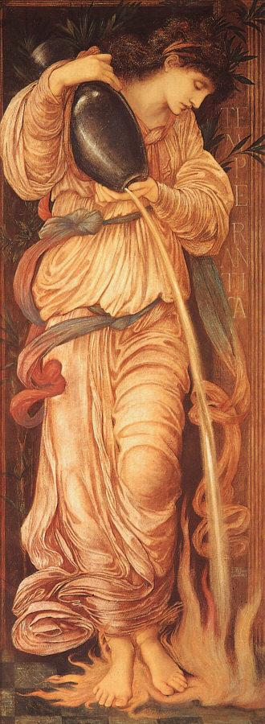

VENT ET FLAMME
Suis-je vent? Suis-je cime?
Vent le vide m'attend.
Pic l'aube m'illumine
Et le lever battant.
J'ai tout chassé, le page,
Le puits, la maison sage,
Mais j'ai gardé l'orage
Qui m'entoure et me tend.
Brasier. Aube. Lumière.
La brûlure est ma soeur.
Il n'est plus de ramière
Quand flambe ma douceur.
La ronde des amantes
Par les buis et les menthes
M'emporte où seuls qui mentent
Ce sont mon front, ma peur.
Fidèle puisatière
Je hisse ma raison.
Ma tâche coutumière
Fait germer la saison.
Le feu qu'en moi je cèle
Se fige nuit et aile
Ma mouvante toison-
Et cette aile, ce leurre
Pour celui que j'effleure
Est promesse et prison.
2 juin 1978
Michel Galiana (c) 1991
|

|
WIND AND FLAME
Am I the wind? A peak?
The wind that gaps await?
A peak that like a streak
Of lightning dawns invade?
I rid myself of all,
Pageboy, well, tidy hall,
But the storm I withhold:
Which is my shield and aid.
A fire, a dawn, a light,
I am akin to burn.
No forest ever might
Survive my flaming warmth.
A ring of dancing girls
That through thyme and mint whirls
Drags me there where unfurls,
But on my face, the truth.
Faithful well-attendant
I winch up my reason.
My task is recurrent;
Makes sprout the new season.
The fire that in me hides
Freezes to night and rides
On my streaming hair-crown.
Beware: this waving lure
To whom I touch is sure
To be pledge and prison.
2nd June 1978
Transl. Christian Souchon 01.01.2006 (c) (r) All rights reserved
|